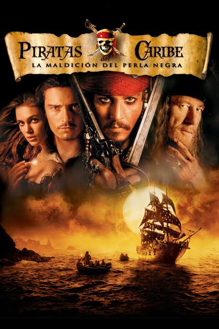

Jack Sparrow
Interpretado por Johnny Depp
Capitán pirata astuto, impredecible y carismático. Busca recuperar su barco, el Perla Negra, utilizando su inteligencia, su capacidad de improvisación y sus engaños.

AVENTURAS · ACCIÓN · FANTASÍA
El capitán Jack Sparrow llega a Port Royal con la intención de conseguir un barco. Sin embargo, pronto se ve involucrado en una peligrosa aventura junto a Will Turner, quien intenta rescatar a Elizabeth Swann de una tripulación de piratas malditos.
Pirates of the Caribbean: The Curse of the Black Pearl
2003
Gore Verbinski
Ted Elliott y Terry Rossio
Estados Unidos
143 minutos
Aventuras, acción y fantasía
Jerry Bruckheimer
Johnny Depp, Orlando Bloom, Keira Knightley y Geoffrey Rush
Klaus Badelt
La historia comienza cuando el capitán Jack Sparrow, un pirata astuto y excéntrico, llega a Port Royal en busca de una embarcación. Allí conoce a Will Turner, un joven herrero que siente un profundo cariño por Elizabeth Swann, la hija del gobernador.
Poco después, Port Royal es atacado por la tripulación del Perla Negra, un barco pirata dirigido por el capitán Héctor Barbossa. Durante el ataque, los piratas secuestran a Elizabeth, pues creen que puede ayudarlos a romper una antigua maldición.
Will decide rescatar a Elizabeth y busca la ayuda de Jack Sparrow. Aunque inicialmente desconfía del pirata, ambos terminan formando una alianza para perseguir al Perla Negra.
Durante su viaje, descubren que Barbossa y su tripulación robaron un tesoro azteca que estaba maldito. Como consecuencia, los piratas se convirtieron en seres que no pueden disfrutar de los placeres de la vida ni morir de manera normal. Bajo la luz de la luna, sus cuerpos muestran una apariencia esquelética.
Para romper la maldición, deben devolver todas las monedas robadas y ofrecer la sangre de quienes participaron en el robo, o de sus descendientes. Esta situación convierte a Will Turner en una pieza fundamental de la historia.
Jack, Will y Elizabeth enfrentan numerosos peligros, combates, persecuciones y traiciones. Mientras tanto, Jack intenta recuperar el Perla Negra, barco que Barbossa le arrebató años atrás.
Finalmente, los protagonistas logran romper la maldición. Jack derrota a Barbossa y recupera la oportunidad de volver a navegar como capitán del Perla Negra. Will y Elizabeth también consiguen estar juntos, después de superar los conflictos que enfrentaron.
Interpretado por Johnny Depp
Capitán pirata astuto, impredecible y carismático. Busca recuperar su barco, el Perla Negra, utilizando su inteligencia, su capacidad de improvisación y sus engaños.
Interpretado por Orlando Bloom
Joven herrero que decide emprender una peligrosa aventura para rescatar a Elizabeth. Es valiente, leal y descubre secretos sobre su origen familiar.
Interpretada por Keira Knightley
Hija del gobernador de Port Royal. Es inteligente, decidida y valiente. A lo largo de la película demuestra que puede enfrentar peligros y tomar sus propias decisiones.
Interpretado por Geoffrey Rush
Capitán del Perla Negra y principal antagonista. Lidera una tripulación de piratas malditos y busca desesperadamente recuperar su condición humana.
Interpretado por Jack Davenport
Oficial de la Marina Real británica que persigue a los piratas. Está enamorado de Elizabeth y representa el orden y la autoridad de Port Royal.
Interpretado por Kevin McNally
Marinero experimentado que conoce numerosas historias y supersticiones sobre el mar. Se convierte en un aliado importante de Jack Sparrow.
La historia se desarrolla principalmente en el mar y presenta barcos piratas, combates navales, persecuciones y exploraciones.
Un conjunto de monedas robadas provoca una maldición que impulsa gran parte de los conflictos de la película.
Los protagonistas deben superar enemigos, duelos, traiciones y situaciones inesperadas para alcanzar sus objetivos.
Piratas del Caribe: La maldición del Perla Negra pertenece al subgénero de aventuras porque presenta una historia llena de viajes, enfrentamientos, exploraciones, búsquedas y situaciones peligrosas. Los protagonistas deben superar distintos obstáculos para alcanzar sus objetivos, mientras la narración combina acción, suspenso, humor y elementos fantásticos.
Dejamos atrás los barcos piratas para entrar a un videojuego lleno de animales, trampas y desafíos inesperados.